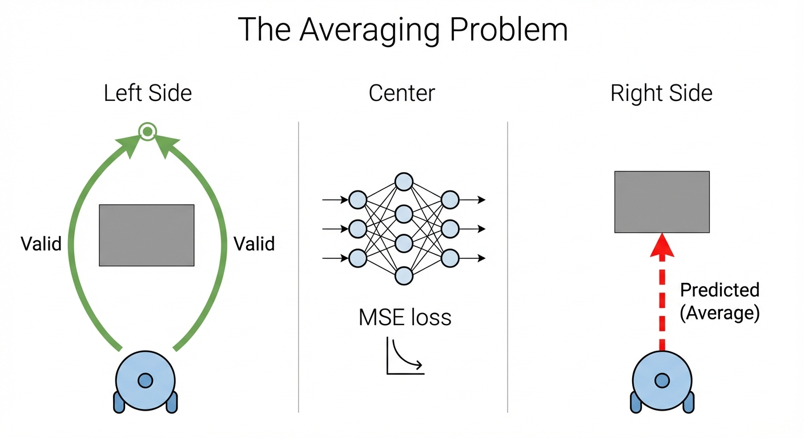
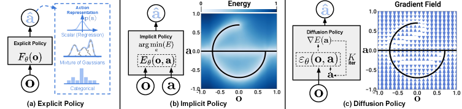
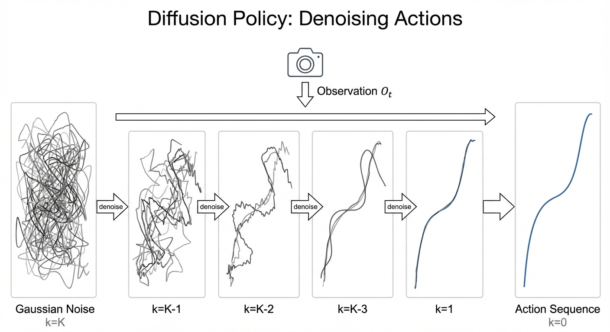
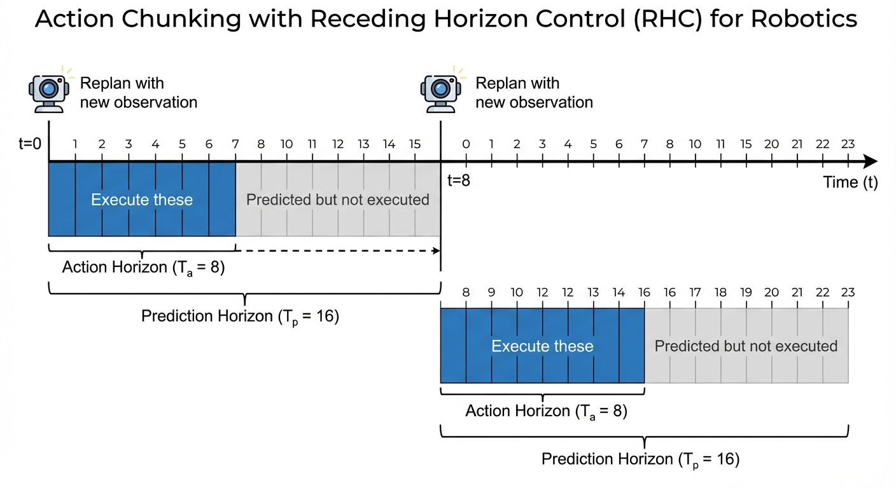

Why Robots Keep Crashing Into Walls (And How Diffusion Fixed It)
Train a robot to avoid an obstacle. Show it 100 demos going left, 100 going right. What does it learn?
It drives straight into the wall.
This isn’t a bug. It’s a fundamental flaw in how we’ve been teaching robots for decades. The neural network averages “go left” and “go right” into “go straight ahead” — directly into the obstacle.
In 2023, a single paper fixed this. Diffusion Policy1 showed that the same technique generating Stable Diffusion images could teach robots to move — and outperformed everything before it by 46.9%.

Diffusion Policy (Chi et al., RSS 2023)1 — 2,000+ citations, now the standard approach for robot learning.
- Problem: Behavioral cloning averages multiple valid actions → nonsense
- Fix: Generate actions like images — denoise from random noise
- Result: 46.9% improvement across 12 tasks
Explicit Policies (And Why They Fail)
Your first instinct for robot learning is probably: “collect demos, train a neural net to predict actions.” This is the explicit policy approach — direct regression from observations to actions:
\[ \pi_\theta(s) = \arg\min_\theta \mathbb{E}_{(s,a) \sim \mathcal{D}} \left[ \| \pi_\theta(s) - a \|^2 \right] \]
Here s is the state (what the robot observes), a is the action (what it should do), and 𝒟 is your dataset of expert demonstrations. Train a network π_θ to minimize the mean squared error between predicted and demonstrated actions. What could go wrong?
As it turns out, quite a lot.
The Multimodality Problem
Consider a robot approaching an obstacle. In your demonstrations, sometimes the expert goes left, sometimes right — both are valid. What does a standard neural network trained with MSE loss learn?

When demonstrations contain multiple valid actions for the same state, MSE loss produces the average of those actions. Going left and going right averages to going straight ahead — directly into the obstacle.
This isn’t a rare edge case. Multimodality appears everywhere in manipulation:
- Short-horizon: Approach an object from the left or right
- Long-horizon: Different orderings of subtasks (stack blocks A-B-C or C-B-A)
- Grasping: Multiple valid grasp poses for the same object
The mathematical reason is fundamental: neural networks with continuous activations draw smooth curves through data. They cannot represent the sharp discontinuity between “go left” and “go right” — the decision boundary would need to be infinitely steep.2
What About Mixture Models?
You might think: “Use a Gaussian Mixture Model (GMM) to capture multiple modes!” Methods like LSTM-GMM try this, but face challenges:
- Must pre-specify the number of modes (how many valid actions exist?)
- Often biased toward one mode in practice
- Struggles with high-dimensional action spaces
These are still explicit policies — they output actions directly, just with a more flexible distribution.
Implicit Policies
Implicit policies take a different approach: instead of outputting actions directly, they learn an energy function E(s, a) over state-action pairs. Low energy = good action. This naturally represents multimodal distributions — multiple actions can have low energy.
Energy-based methods like Implicit BC (IBC)3 can represent arbitrary distributions, but require negative sampling during training — notoriously unstable and prone to mode collapse.
Enter Diffusion Policy

Here’s the key insight from Chi et al.1: diffusion models naturally represent multimodal distributions. The same property that lets them generate diverse images lets them generate diverse robot actions.
In image generation, diffusion starts with noise and iteratively refines it into a coherent image. For robotics, we start with noise and refine it into a coherent action sequence:
Image Diffusion:
- Random pixels → Image
- Conditioned on text prompt
- Multiple valid images per prompt
Action Diffusion:
- Random actions → Trajectory
- Conditioned on visual observation
- Multiple valid trajectories per observation
The denoising process acts like gradient descent on a learned energy landscape. Different random initializations converge to different modes — the policy “commits” to one valid action sequence per rollout while learning the full multimodal distribution.
Why Diffusion Handles Multimodality
Three mechanisms make this work:
Stochastic initialization: Each inference starts from random Gaussian noise, naturally exploring different modes
Score function learning: Instead of predicting actions directly, the network predicts the gradient of log-probability. This sidesteps the normalization constant that makes energy-based methods unstable
Iterative refinement: Langevin dynamics sampling follows the learned gradient field toward high-probability regions, allowing the model to express arbitrarily complex distributions
Langevin dynamics is a sampling algorithm that draws samples from a distribution using only its score function ∇log p(x):
\[ x_{t+1} = x_t + \frac{\eta}{2} \nabla \log p(x_t) + \sqrt{\eta} \, \epsilon, \quad \epsilon \sim \mathcal{N}(0, I) \]
Intuition: It’s gradient ascent with noise.
- The gradient term ∇log p(x) pushes toward high-probability regions
- The noise term √η · ε prevents getting stuck and enables exploration of multiple modes
Why it matters for diffusion: The reverse diffusion process is essentially Langevin dynamics with a time-varying score.
Watch this in action — Diffusion Policy learns both modes and commits to one per episode:
Diffusion Policy commits to one mode per rollout while learning multiple valid trajectories. Video from Chi et al.1
Now let’s see exactly how this works mathematically.
The Diffusion Policy Formulation
Understanding the math is essential for debugging, tuning, and extending the method. Given an observation Oₜ, we want to sample from the action distribution p(Aₜ | Oₜ), where Aₜ is a sequence of future actions (more on this shortly).
Forward Process (Training)
During training, we gradually corrupt clean action sequences with noise. This teaches the network what noise “looks like” at each corruption level:
\[ A_t^k = \sqrt{\bar{\alpha}_k} \cdot A_t^0 + \sqrt{1 - \bar{\alpha}_k} \cdot \epsilon, \quad \epsilon \sim \mathcal{N}(0, I) \]
Here Aₜ⁰ is the clean action sequence from demonstrations, ε is random Gaussian noise, k indexes diffusion timesteps (not robot timesteps), and ᾱₖ is a noise schedule controlling how much signal remains at step k.
Reverse Process (Inference)
At test time, we start from pure noise and iteratively denoise:

\[ A_t^{k-1} = \frac{1}{\sqrt{\alpha_k}} \left( A_t^k - \frac{1 - \alpha_k}{\sqrt{1 - \bar{\alpha}_k}} \epsilon_\theta(O_t, A_t^k, k) \right) + \sigma_k z \]
Here ε_θ is a neural network predicting the noise, z ~ 𝒩(0, I) is fresh noise for stochasticity, and αₖ, σₖ are schedule parameters.
The goal: We want to reverse the noising process. Given a noisy action, recover the clean one.
The key idea: If we knew what noise was added, we could subtract it out. We train a neural network to predict that noise.
Variables (refer back to these):
- A⁰: Clean action (what we want)
- Aᵏ: Noisy action at diffusion step k
- ε: The actual noise that was added (unknown at inference)
- ε_θ: Network’s prediction of the noise
- ᾱₖ: Cumulative noise schedule (how much signal remains at step k)
Step 1 — The forward process is a simple formula:
We can write any noisy action as: \[A^k = \underbrace{\sqrt{\bar{\alpha}_k}}_{\text{signal scaling}} \cdot A^0 + \underbrace{\sqrt{1-\bar{\alpha}_k}}_{\text{noise scaling}} \cdot \epsilon\]
This is just: (scaled clean action) + (scaled noise). No iterative steps needed.
Step 2 — Rearrange to solve for the clean action:
If we knew the noise ε, we could solve for the clean action A⁰: \[A^0 = \frac{A^k - \sqrt{1-\bar{\alpha}_k} \cdot \epsilon}{\sqrt{\bar{\alpha}_k}}\]
Read this as: “subtract the scaled noise from the noisy action, then rescale.”
Step 3 — Train a network to predict the noise:
We don’t know the true noise ε at inference time. So we train a neural network ε_θ to predict it from the noisy action and observation.
Substituting the network’s prediction gives us an estimate of the clean action: \[\hat{A}^0 = \frac{A^k - \sqrt{1-\bar{\alpha}_k} \cdot \epsilon_\theta(O, A^k, k)}{\sqrt{\bar{\alpha}_k}}\]
Step 4 — Use the estimate to take a denoising step:
We want p(Aᵏ⁻¹ | Aᵏ) — the reverse step. Using Bayes and conditioning on A⁰:
\[q(A^{k-1} | A^k, A^0) = \mathcal{N}(A^{k-1}; \tilde{\mu}_k, \tilde{\sigma}_k^2 I)\]
Now substitute our estimate Â⁰. After simplification, we get:
\[ A^{k-1} = \frac{1}{\sqrt{\alpha_k}} \left( A^k - \frac{1-\alpha_k}{\sqrt{1-\bar{\alpha}_k}} \epsilon_\theta \right) + \sigma_k z \]
The first term removes predicted noise; the second adds fresh noise for the next step.
The network ε_θ(Oₜ, Aₜᵏ, k) learns to answer: “Given this noisy action sequence and this observation, what noise was added?”
Equivalently, it learns the score function — the gradient of log-probability pointing toward valid actions. The denoising process follows this gradient field from noise toward high-probability action sequences.
Training Objective
The training objective is beautifully simple. We add noise to expert actions, then train the network to predict what noise was added:
\[ \mathcal{L}(\theta) = \mathbb{E}_{k, \epsilon, (A_t^0, O_t)} \left[ \| \epsilon - \epsilon_\theta(O_t, A_t^k, k) \|^2 \right] \]
This elegant formulation avoids the normalization constant entirely — we never need to compute Z = ∫ exp(-E(a)) da.
So far, we’ve focused on what to predict. But there’s another important design choice: predicting sequences of actions, not just single steps. This turns out to be just as important as the diffusion formulation itself.
Action Chunking: Predicting Sequences
An important design choice in Diffusion Policy is predicting sequences of future actions rather than single-step actions. This is called action chunking, and it solves several problems at once.
The Compounding Error Problem
In standard closed-loop control, errors compound quadratically:
With matched train/test distributions, total error scales as O(ε·T) — linear in horizon T.
With distribution shift (the reality), error scales as O(ε·T²) — quadratic growth.4
A small mistake pushes the robot into unfamiliar states, causing larger mistakes, causing even more unfamiliar states…
Action chunking dramatically reduces this: a 500-step task with chunk size k=100 becomes effectively a 5-step problem.
The Idle Action Problem
Human demonstrations contain pauses — waiting before prying open a lid, hesitating before a delicate insertion. A single-step policy sees the same observation and must choose between “stay still” and “move” — impossible from current state alone.
With action chunking, the sequence encodes timing implicitly: “stay still for 10 steps, then move.” The behavior becomes Markovian again as long as pauses fit within a chunk.
The Three Horizons

Diffusion Policy uses three temporal parameters:
- Observation horizon (T_o = 2): Past observation steps used as context
- Prediction horizon (T_p = 16): Future actions predicted by the model
- Action horizon (T_a = 8): Actions actually executed before replanning
The key insight is T_a < T_p: we predict more actions than we execute, then replan with updated observations.
Receding Horizon Control
This creates a receding horizon scheme:
Time 0: Predict actions [0, 1, 2, ..., 15]
Execute actions [0, 1, 2, ..., 7]
Time 8: Observe new state
Predict actions [8, 9, 10, ..., 23]
Execute actions [8, 9, 10, ..., 15]
Time 16: Observe, replan, execute...Think of it like a GPS that continuously replans. You compute a route to the destination (prediction horizon), drive for a few miles (action horizon), then replan based on current position. This balances commitment to plans with responsiveness to new information.
What’s Next
In Part 2, we cover the practical details: network architectures (CNN vs Transformer), visual conditioning, DDIM acceleration for real-time control, and the benchmark results showing where Diffusion Policy excels — plus common misconceptions and the surprising connection to optimal control theory.
Read Part 2: Architecture, Results, and Why It Actually Works →
References
[1] Chi et al. Diffusion Policy: Visuomotor Policy Learning via Action Diffusion. RSS 2023. Project page
[2] Decisiveness in Imitation Learning for Robots. Google Research Blog, 2023.
[3] Florence et al. Implicit Behavioral Cloning. CoRL 2021.
[4] Ross, Gordon & Bagnell. A Reduction of Imitation Learning and Structured Prediction to No-Regret Online Learning. AISTATS 2011.